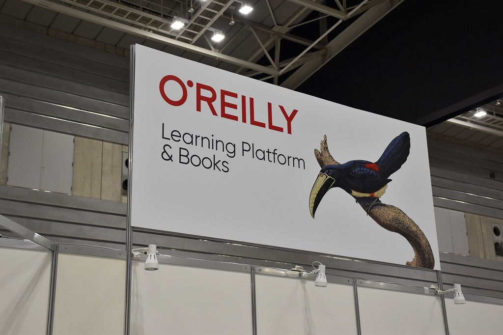

EdgeTech+ 2022
Maker Faire Tokyo 出張版 (2022)
オライリー・ジャパンのブースにて、Maker Faire Tokyo 出張版として出展しました。
出展物はIsevot、コンピューターオセロ、Egaroucid、レトロオセロAIです。





詳細
日程: 2022/11/16-18
場所: パシフィコ横浜
Maker Faire Tokyo 出張版 (2022)
オライリー・ジャパンのブースにて、Maker Faire Tokyo 出張版として出展しました。
出展物はIsevot、コンピューターオセロ、Egaroucid、レトロオセロAIです。
日程: 2022/11/16-18
場所: パシフィコ横浜